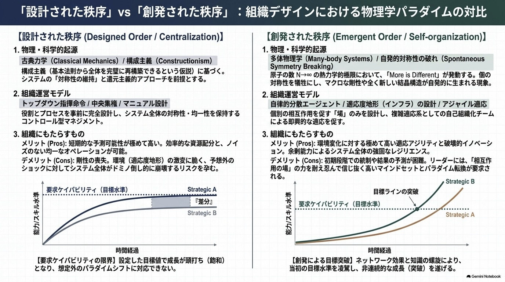

Complexity & Organizations
複雑系の科学が組織について教えてくれるのは、「管理のやり方が変わる」ということです。一人ひとりの行動を細かく積み上げても、組織全体はうまく動きません。でも、全体に効く「取っ手」を見つけて動かせば、組織は動きます。創発とは、その取っ手が現れる現象のことです。What complexity science teaches us about organizations is that the way we manage things changes. Stacking up detailed control over every individual action doesn't make an organization work well. But if you find the right lever for the whole system and move it, the organization moves. Emergence is the name for how that lever appears.
このページでは、もとになっている研究や理論を確認しながら、実際の組織運営に使える形に置き換えて説明します。3つのシミュレーションは、実際に手を動かして試してみるために用意しました。This page walks through the research and theory behind these ideas, and translates them into something you can actually use in running an organization. The three simulations are here so you can try things out yourself, hands-on.
物理学者のフィリップ・アンダーソンは1972年に、こんなことを示しました。世の中のものはすべて、単純な物理の法則に従っています。でも、その単純な法則をいくら積み上げても、全体がどうなるかを組み立て直すことはできません。（アンダーソン, 1972年）In 1972, the physicist Philip Anderson showed something important. Everything in the world follows simple physical laws. But no matter how many of those simple laws you stack up, you can't rebuild what the whole system will do just from that. (Anderson, 1972)
ここで大事なのは、「積み上げて説明できない」ことと、「コントロールできない」ことは別だという点です。温度や圧力は、分子1つ1つの動きを計算しなくても、しっかりコントロールできます。創発を研究しているクラカウアーたちも、この点をはっきり述べています。Here's the key point: not being able to explain something by stacking up small parts is different from not being able to control it. You can control temperature and pressure perfectly well without calculating the motion of every single molecule. Researchers who study emergence, like Krakauer and colleagues, make this same point clearly.
新しい性質が生まれるしくみを持つものは、部品を増やすだけで新しいことができるようになる。しかも、全体をシンプルなルールで説明できるようになる。それは、コントロールしたり設計したりするための「取っ手」を与えてくれる。Systems with the machinery to produce new properties gain new capabilities simply by adding more parts. And the whole system becomes explainable with simple rules. That gives you a lever for control and design. Krakauer, D. C., Krakauer, J. W., & Mitchell, M. (2025). Large Language Models and Emergence: A Complex Systems Perspective.
創発とは、細かい部分をいちいち気にしなくても、全体の動きをシンプルに説明できてしまう、ということです。空気の中には数えきれないほどの分子が飛び回っていますが、私たちは1つ1つの分子の動きを追いかけなくても、「温度」と「圧力」というたった2つの数字で空気をコントロールできます。Emergence means the whole system's behavior can be explained simply, without having to track every small detail. Countless molecules are flying around in the air, but we don't need to follow each one — we can control the air with just two numbers: temperature and pressure.
同じように、組織にも「温度」や「圧力」にあたるものがあるはずです。それは、一人ひとりの行動計画ではありません。会議に誰を呼ぶか。誰と誰が話すか。違う意見をどこまで受け入れるか。誰が最終判断をするか。何を基準に評価するか。こうしたものを変えると、組織全体の動きが変わります。Organizations should have something like "temperature" and "pressure" too. It isn't a detailed action plan for each person. It's things like: who gets invited to which meetings, who talks to whom, how much disagreement gets tolerated, who makes the final call, and what standard people get evaluated by. Change these, and the whole organization's behavior changes.
下のシミュレーションでは、鳥の群れの1羽1羽に、たった3つのルールしか与えられていません。「①近くの仲間とぶつからない ②近くの仲間と同じ方向を向く ③群れの真ん中に寄る」。この3つだけです。In the simulation below, each bird follows only three rules: (1) don't crash into nearby birds, (2) match direction with nearby birds, (3) move toward the center of nearby birds. That's all — just three rules.
ただし鳥には、考えも、感情も、損得勘定も、上下関係もありません。人間の組織にはそれが全部あります。この群れのシミュレーションが見せてくれるのは、「単純なルールから全体の動きが生まれる」という仕組みそのものです。組織が実際にこう動くことの証拠ではありません。Birds, though, have no thoughts, no emotions, no cost-benefit calculations, and no hierarchy. Human organizations have all of these. What this flocking simulation shows is the mechanism itself — simple rules producing whole-group behavior. It is not proof that organizations actually work this way.
クラカウアーたちは、創発を2つのタイプに分けています。単純な部品同士がぶつかり合って複雑さが生まれるタイプと、もともと複雑な材料（学習した経験など）から高い能力が生まれるタイプです。生き物や経済、そして人間の組織は、後者のタイプにあたります。組織のメンバーは1人1人がすでにたくさんのことを学んで経験を積んだ存在で、鳥のシミュレーションの1羽のような「何も知らない存在」とは違います。Krakauer and colleagues divide emergence into two types: one where complexity arises from simple parts interacting, and one where high-level ability arises from material that was already complex, like learned experience. Living things, economies, and human organizations belong to the second type. Each member of an organization has already learned a great deal and built up experience — unlike a single bird in the simulation, which starts out knowing nothing.
「中央が現場のすべてをコントロールすることはできない」という話を、きちんとした理論として示したのは、サイバネティクスという分野の研究者、W・R・アシュビーです。The idea that headquarters can't control everything happening in the field was put on rigorous theoretical footing by W. Ross Ashby, a researcher in the field of cybernetics.
多様性だけが、多様性に対抗できる。（Only variety can destroy variety.）
コントロールする側が用意できるパターンの数が、コントロールされる側で実際に起きるパターンの数より少なければ、その差の分だけコントロールは効かない。Only variety can destroy variety.
If the number of patterns the controller can produce is smaller than the number of patterns that actually occur on the controlled side, control fails by exactly that gap. W. Ross Ashby (1956). An Introduction to Cybernetics — 必要多様性の法則the Law of Requisite Variety
これは感覚論ではなく、情報の理論として証明できることです。本社が現場より単純にしか物事を見られないなら、本社が現場のすべてを設計・統制することは、そもそも不可能なのです。This isn't a matter of opinion — it can be proven as a theory of information. If headquarters can only perceive things more simply than the field does, then headquarters designing and controlling everything in the field is impossible from the start.
この法則には、解き方が3つあります。There are three ways to solve this problem.
データや観測の仕組み、専門の人を増やして、本社がもっと多くの状況を見分けられるようにする。コストはかかるが、有効な場面もある（航空管制、金融のリスク管理など）。Add more data, better observation systems, and more specialists so headquarters can tell more situations apart. This costs money, but it works well in some settings, like air traffic control or financial risk management.
標準化・マニュアル化・チェックリストで、選べる選択肢そのものを減らす。「設計」がいちばんうまく効くやり方。Use standardization, manuals, and checklists to reduce the number of choices available in the first place. This is where "design" works best.
たくさんのパターンを知っている現場の人に、決める権利を渡す。権限委譲は理想論ではなく、この法則を解く現実的な方法の1つです。Give decision-making authority to the people in the field who know the most patterns. Delegating authority isn't idealism — it's one practical way to solve this law.
航空会社は、離着陸の手順ではBを徹底し（チェックリスト通りにやる）、非常事態が起きたときは機長にCを与えます（その場の最終判断を任せる）。「この仕事は本社では対応しきれないパターンの多さだから、Cを選ぶ」という順番で考えるのが、この法則の正しい使い方です。Airlines enforce Option B strictly for takeoff and landing procedures (follow the checklist exactly), and give Option C to the captain in an emergency (trust their judgment on the spot). The right way to use this law is to reason in this order: "this task has more patterns than headquarters can handle, so we choose C."
ここまでの話をつなげると、こういう流れになります。Putting this together, the chain of reasoning looks like this.
この流れの中で、2番目と4番目がよく省略されます。省略すると、「部分から全体は説明できないのだから、コントロールなんて無理で、リーダーは場を整えるだけでいい」という単純な話になってしまいます。でも、そこには2つの飛躍があります。Steps two and four in this chain often get skipped. Skip them, and you end up with an oversimplified story: "the whole can't be explained from the parts, so control is impossible, and leaders should just tend the conditions." But that jumps over two gaps in the logic.
1つ目。「組み立てて説明できない」ことと「コントロールできない」ことは、別の話です。2つ目。「完全にはコントロールできない」から「だから場を整えるだけでいい」は、論理的には導けません。一部分だけでもコントロールできるなら、それもコントロールです。中央集権的なやり方がうまくいかなくなるのは、「本質的に間違っているから」ではなく、本社が扱えるパターンの数を、現場の複雑さが超えてしまったときだけです。その外側では、設計もコントロールもちゃんと機能します。First: not being explainable by assembling the parts is a different matter from not being controllable. Second: "control is never complete" does not logically lead to "so leaders should only tend the conditions." Controlling even part of something is still control. Centralized approaches stop working not because they're fundamentally wrong, but only when the field's complexity exceeds the number of patterns headquarters can handle. Outside that limit, design and control both work fine.
前の章で見たアシュビーの法則は、「本社が扱えるパターンの数」という情報量の話でした。ここではもう1つ、号令だけでは組織が動かない理由を見ます。ルールを決めること自体は設計です。でも、決めたルールが実際に組織にどう広まるかは、号令では制御できない創発的な過程だからです。Ashby's Law from the last section was about information — the number of patterns headquarters can handle. Here's a second reason a directive alone doesn't move an organization. Deciding on a rule is a design act. But how that rule actually spreads through the organization is an emergent process that a directive alone can't control.
創発が起きる場面での変化は、まっすぐには進みません。しばらく何も起きず、あるところを超えた瞬間に、一気に動き出します。これは、やる気や熱意の問題ではなく、「しきい値」の仕組みの問題です。Change doesn't move in a straight line when emergence is involved. Nothing seems to happen for a while, and then the moment a certain point is crossed, everything moves at once. This isn't about motivation or enthusiasm — it's about how thresholds work.
「組織の自然なリズムに合わせる」「じっと我慢する時期を経て、急に伸びる」といった話は、このしきい値の性質とつじつまが合いますし、実感にも合います。ただし、これはきちんとした証明があるわけではなく、経験則として受け止めるのが正確です。Ideas like "work with the organization's natural rhythm" or "endure a quiet period before a sudden leap" line up with how thresholds behave, and they match people's intuition. That said, there's no rigorous proof of this — it's more accurate to treat it as a rule of thumb.
§02で見た3つの解き方のうち、実際の仕事の現場でよく使われるのはBとCです。B（標準化・マニュアル化）は、ルールを決めて任せる「設計」にあたり、C（現場に判断を渡す）は、現場の判断に委ねる「創発」にあたります。ここからは、目の前の仕事にBとCのどちらを選ぶべきかを考えます。Of the three ways to solve Ashby's Law from section 2, B and C are the ones actually used day to day. Option B — standardizing and setting fixed rules — is what we'll call "design." Option C — handing judgment to the field — is what we'll call "emergence." From here, the question is which of the two, design or emergence, fits the work in front of you.
設計と創発、どちらを選ぶべきかは、組織が新しいか古いかではなく、その仕事の性質で決まります。見るべきポイントは4つです。Whether to choose design or emergence isn't about whether an organization is new or old — it depends on the nature of the work itself. There are four things to look at.
| 見るポイントWhat to look at | 設計（きっちり決める）が向いているDesign (fixed rules) fits | 創発（現場に任せる）が向いているEmergence (leave it to the field) fits |
|---|---|---|
| まわりの変化How much things change | 少ない。状況がずっと同じLittle. The situation stays the same | 多い。前提が数ヶ月で変わるA lot. Assumptions change within months |
| 情報がどこにあるかWhere the information is | 本社に集められる。数字にしやすいCan be gathered at HQ. Easy to quantify | 現場にしかない。言葉にしにくいOnly exists in the field. Hard to put into words |
| 失敗の重さHow costly failure is | 取り返しがつかない。人の命やお金に関わるIrreversible. Involves lives or money | やり直せる。安く試せるRecoverable. Cheap to try again |
| 繰り返しの多さHow repetitive it is | 同じ作業が毎回あるThe same task happens every time | 毎回条件が違う。一度きりが多いConditions differ each time. Often one-off |
| 具体例Examples | 給料の計算、経理、安全のルール、法律への対応、飛行機の離着陸の手順、感染対策Payroll, accounting, safety rules, legal compliance, takeoff/landing procedures, infection control | 新しい商品を考える、研究開発、お客さんへのその場の対応、手術中の判断、新規事業Coming up with new products, R&D, handling customers on the spot, decisions during surgery, new ventures |
手術室は、器具の数を数えたり感染を防いだりする場面ではものすごくきっちりしています（手順を1つでも飛ばしてはいけない）。でも、手術中に予想外のことが起きたときは、その場でメンバーの役割を組み替えます。この2つが、同じチームの中で、同じ日に起きています。An operating room is extremely strict about counting instruments and preventing infection — you can't skip a single step. But when something unexpected happens mid-surgery, the team reshuffles roles on the spot. Both of these happen in the same team, on the same day.
やるべきことは、「アジャイルな組織になる」ことではありません。自分たちの仕事を4つのポイントで仕分けて、それぞれに合ったやり方をあてはめることです。失敗は両方の方向で起きます。きっちり決めるべき仕事を現場任せにしてしまうこと（安全のルールを現場の裁量にする）。逆に、現場に任せるべき仕事をきっちり管理しすぎること（新しいことに挑戦する仕事を、細かい数値目標でしばる）。後者ばかりが問題にされがちですが、前者は人の命に関わります。The goal isn't to "become an agile organization." It's to sort your work using these four points and apply the right approach to each. Failure happens in both directions: leaving work that should be tightly controlled up to the field's discretion (like treating safety rules as optional), or over-managing work that should be left to the field (like locking down new ventures with detailed numeric targets). The second failure gets talked about more, but the first one can cost lives.

前の章では、仕事を「設計」と「創発」に仕分けました。ここからは主語を組織全体に移し、「創発に任せる」と決めた仕事の中で、実際に何が起きているかを見ていきます。組織全体の性質は、メンバー1人1人の行動が積み上がってできています。その積み上がり方には、大きく分けて2つの道筋があります。The last section sorted individual pieces of work into "design" and "emergence." From here, the subject shifts to the organization as a whole: what actually happens, inside the work you leave emergent. Any organization-wide property is built up from what each individual member does. Broadly, that buildup can take one of two routes.
コズロフスキーとクライン（2000年）という研究者は、小さな個人の動きが組織全体の性質に育つまでの道筋を2つに分けました。「合成」はメンバーの性質が似てきて、みんなで共有される方向。「編成」は、それぞれ違うものが組み合わさって、全体としての力になる方向です。Researchers Kozlowski and Klein (2000) split the path from small individual behaviors to whole-organization properties into two routes. "Composition" is the direction where members become more alike and share something in common. "Compilation" is the direction where different things combine into a single collective strength.
どちらも、複数のメンバーがやり取りしながら1つの組織的な性質が出来上がっていく、という点では同じです。分かれ道になるのは1点だけです。その性質は、メンバー同士が似てくることで生まれるのか（合成）、それともメンバー同士の違いがうまく組み合わさることで生まれるのか（編成）。個人1人だけに向けた働きかけの話ではなく、どちらも人と人とのやり取りの中で起きる現象です。Both are alike in this respect: a single organization-wide property forms out of multiple members interacting with each other. There's only one fork in the road. Does that property come from members becoming more alike (composition), or from members' differences combining well (compilation)? Neither is about acting on one individual in isolation — both are things that happen through interaction between people.
1人1人の考え方や気持ちが、日々のやり取りを通じて、共通の文化やルールに近づいていくプロセスです。会社の文化、心理的な安心感、みんなが共有するビジョンが、ここに入ります。共有される性質は、必ず1人1人から生まれます。だから会社の文化を評価するときは、上司の主観的な思い込みに頼らず、メンバー1人1人が実際にどう感じているかを、きちんと調べる必要があります。This is the process where individual thoughts and feelings converge toward a shared culture or shared rules through daily interaction. Company culture, psychological safety, and a shared vision all belong here. A shared property always arises from individuals. So when you assess a company's culture, you need to actually check how each person feels — not rely on a manager's subjective impression.
では、どのように調べるのか。簡単な方法は、メンバー1人1人に同じ質問をして、答えがどれくらいバラバラかを見ることです。「このチームが目指している方向を一言で言うと？」のような質問をして、答えがほぼ同じ言葉に集まるならそろっている状態、バラバラならまだそろっていません。So how do you actually check this? The simple way is to ask every member the same question, and look at how much the answers vary. Ask something like "In one sentence, what is this team aiming for?" — if the answers cluster around nearly the same words, you're aligned. If they scatter, you're not there yet.
もう少しきちんと確かめたいときは、組織研究で使われている2つの指標が参考になります。メンバー同士の答えがどれだけ一致しているかを測る「rwg」という指標（ジェームズ, デマリー, ウルフ, 1984年）と、チームの違いがどれだけ個人の答えの違いを説明しているかを測る「ICC」という指標（ブリース, 2000年）です。どちらも数値が高いほど、そろっている度合いが強いということです。§6の3つの質問のうちQ2（「実際にどれくらいそろっているかを見る」）は、まさにこの確認作業にあたります。ここで「ほぼそろっている」と判定されて初めて、合成の土台ができあがったと言えます。For a more rigorous check, organizational research offers two useful statistics. rwg (James, Demaree, & Wolf, 1984) measures how closely members' answers match each other, and ICC (Bliese, 2000) measures how much of the difference in individual answers is explained by team membership. Higher numbers on either mean stronger alignment. Question 2 of the three-question check in section 6 — "check how closely they actually match" — is exactly this kind of assessment. Only once that check comes back "nearly identical" can you say the foundation of composition is actually in place.
メンバーそれぞれが違う強みを持ち寄り、それがパズルのピースのように組み合わさって、全体の力になるプロセスです。全員が同じである必要はありません。「誰が何を知っているか」という組み合わせ方こそが大事です。プロのスポーツチームやアジャイルなチームで、全員が同じスキルを持つより、違う役割の人がうまく連携するほうが、高い成果を出せるのと同じです。This is the process where each member brings a different strength, and those strengths fit together like puzzle pieces into collective power. Members don't need to be alike. What matters is how "who knows what" combines. Just like a professional sports team or an agile team performs better when different roles work well together, rather than when everyone has the same skill.
このページに、編成的創発を体験するシミュレーションがないのは、手を抜いているからではありません。「組み合わせ方」がケースごとに全然違うので、1つのシンプルなモデルにしにくいという性質があるからです。This page has no simulation for compilation, and that's not because we skipped it. It's because how things combine differs so much from case to case that it resists being reduced to one simple model.
これは実務上も大事なヒントです。測りにくいもの、モデルにしにくいものは、経営者の目に入りにくくなります。「アジャイルの本質」と言われながら、編成的創発がいちばん管理されていないのは、おそらくこの「測りにくさ」が理由です。This is itself a useful clue for practice: whatever is hard to measure or model tends to escape a manager's attention. Compilation is called "the essence of agile," yet it's probably the least managed of all — likely because it's the hardest to measure.
心理的な安心感や共通の価値観（合成）が土台にないと、アジャイル（編成）はうまく機能しません。実務としては説得力のある話です。Without a foundation of psychological safety and shared values (composition), agile ways of working (compilation) don't function well. This is a convincing story in practice.
ただし、これはコズロフスキーとクラインが主張したことではありません。彼らの6つの分類は「創発の種類分け」であって、「順番」についての理論ではないからです。この順番の話は実務的な解釈であり、支えるには心理的安全性の研究など、別の根拠が必要です。But this isn't something Kozlowski and Klein actually argued. Their six-way classification is a taxonomy of emergence types, not a theory about sequence. This ordering claim is a practical interpretation, and it needs separate support — like research on psychological safety — to hold up.
前の章では、創発を「そろえる（合成）」と「組み合わせる（編成）」という2つの方向に分けました。ただし実際の組織の指標を見ていくと、この2つだけでは足りない場面があります。たとえば「チームの雰囲気」というものを考えてみます。これはメンバー1人1人の感じ方から成り立っていますが、その成り立ち方にはいくつかのパターンがあります。コズロフスキーとクライン（2000年）は、色々な組織研究を見比べて、そのパターンを6つに整理しました。The last section split emergence into two directions: aligning (composition) and combining (compilation). But looking at real organizational metrics, those two categories alone aren't always enough. Take something like "team mood," for example. It's built up from how each individual member feels, but there are several different patterns in how that happens. Kozlowski and Klein (2000) compared a wide range of organizational research and sorted these patterns into six types.
この6つのタイプは、コズロフスキーとクラインが色々な組織研究を見比べてまとめた、分類のための道具です。もともとは「1人1人から集めたデータを、チームや組織全体の指標として合算していいか」を判定するために作られています。These six types are a classification tool that Kozlowski and Klein built by comparing organizational research. They were originally designed to judge whether it's valid to aggregate data collected from individuals into a team- or organization-level metric.
ここで使えるのは、「成り立ち方が違えば、効く打ち手も違う」という点です。これは、分類から論理的に導ける話です。6つのタイプと、それぞれに効く打ち手は以下の通りです。What's useful here is this: different formation patterns call for different effective levers. That follows logically from the classification itself. Here are the six types, and the lever that works for each.
マクロな平均に綺麗に収束する。組織の空気、みんなで共有する考え方。Cleanly converges on a macro average. Organizational climate, shared mindsets.
出す量は人によって違うが、システムが最低ラインを縛っている。営業所の売上など。Individual output varies, but the system enforces a minimum. Sales branch revenue, for example.
バラつきが大きく、手を抜いてもそのまま合算される。欠勤率、離職率など。Large variation, and any slacking off gets summed in directly. Absenteeism, turnover rate, for example.
いちばん弱い人、またはいちばん強い人が、全体を決めてしまう。登山チームの速度、裁判員の判決など。The weakest or the strongest person determines the whole outcome. A climbing team's pace, a jury's verdict, for example.
平均ではなく、メンバー同士の違いの大きさそのものが、組織の特徴になる。多様性、規範がどれだけ根づいているかなど。Not the average, but the size of the differences between members, defines the organization's character. Diversity, how deeply norms have taken root, for example.
違う役割を持つ人がうまく組み合わさって、全体の力になる。誰が何を知っているかを覚えている関係、アジャイルチームなど。People in different roles combine well to create collective strength. Transactive memory (who remembers what others know), agile teams, for example.
使い方はシンプルです。動かしたい組織の指標を1つ選び、「これはどのタイプか」を考えます。それだけで、打つべき手が変わります。よくある失敗は、本当は「いちばん弱い人が全体を決めるタイプ」の指標に対して、全員向けの研修という「そろえる」タイプの手を打ってしまうことです。平均は上がっても、指標そのものは動きません。Using this is simple. Pick one organizational metric you want to move, and ask which type it is. That alone changes what lever you should pull. A common mistake is applying an "alignment" lever — like training for everyone — to a metric that's actually a "weakest link decides" type. The average goes up, but the metric itself doesn't budge.
ここでいう指標とは、「チームの雰囲気」「営業所の売上」「欠勤率」のように、上の6枚のカードに出てきたのと同じ、あなたが実際に良くしたい・動かしたいと思っている組織の数字や状態のことです。The "metric" here means an organizational number or state you actually want to improve or move — things like "team mood," "sales revenue," or "absenteeism," the same kind of thing shown in the six cards above.
組織で実際に使われている指標を大まかに分けると、次のようなカテゴリがあります。（これはコズロフスキーとクラインの分類ではなく、実務でよく使われる切り口をまとめた、実務的な整理です。）Organizational metrics broadly fall into categories like these. (This isn't Kozlowski and Klein's own classification — it's a practical grouping of measurement angles commonly used in practice.)
事業の結果そのものを測る指標です。例：営業所の売上。Metrics that measure the business result itself. Example: sales branch revenue.
メンバーがどれだけ組織にとどまり、働き続けているかを測る指標です。例：欠勤率、離職率。Metrics measuring how much members stay with and keep working for the organization. Example: absenteeism, turnover rate.
メンバーの気持ちや考え方がどれだけそろっているかを測る指標です。例：チームの雰囲気、心理的安全性。Metrics measuring how aligned members' feelings and thinking are. Example: team mood, psychological safety.
メンバー同士の違いの大きさそのものを測る指標です。例：属性やバックグラウンドの多様性。Metrics measuring the size of differences between members. Example: diversity of backgrounds.
誰が何を知っているか、役割がどう組み合わさっているかを測る指標です。例：専門性の分布、アジャイルチームの役割分担。Metrics measuring who knows what, and how roles combine. Example: distribution of expertise, role allocation on an agile team.
一番弱い人、または一番強い人の能力で全体が決まってしまう指標です。例：登山チームの速度、裁判員の判決。Metrics where the whole outcome is decided by the weakest or strongest member's ability. Example: a climbing team's pace, a jury's verdict.
どのカテゴリの指標でも、それが実際に6つのうちどのタイプにあたるかは、別に見分ける必要があります。カテゴリは「何を測るか」の切り口にすぎず、「どう成り立つか」を決めるのは、以降のQ1〜Q3です。ここまで見てきた通り、6つのタイプによって効く打ち手はまったく違います。だから、自分が動かしたい指標が6つのうちどれにあたるかを、まず見分ける必要があります。そのために、自分自身や周りのメンバーに、次の3つの質問を順番に投げかけてみてください。Whichever category a metric falls into, you still need to separately work out which of the six types it actually is. The category is just a way of organizing what you're measuring — the following Q1 through Q3 determine how it's actually formed. As you've seen, each of the six types responds to a completely different lever. So the first step is figuring out which of the six your metric belongs to. To do that, ask yourself or the people around you the following three questions, in order.
「チームの雰囲気」や「営業所の売上」だけでなく、組織の雰囲気を診断する指標には他にも色々な例があります。6つのタイプそれぞれを代表する指標を1つずつ選び、この質問をあてはめると、次のようになります。Beyond "team mood" and "sales branch revenue," there are plenty of other metrics for diagnosing an organization's climate. Here's what happens when you pick one representative metric for each of the six types and run it through these questions.
| チームの雰囲気Team Mood | 営業所の売上Sales Branch Revenue | 欠勤率Absenteeism | 登山チームの速度Climbing Team's Pace | メンバーの多様性Member Diversity | 誰が何を知っているかWho Knows What | |
|---|---|---|---|---|---|---|
| Q1. 1人の数字で決まるかQ1. Decided by one person's number? | いいえ → Q2へNo → go to Q2 | いいえ → Q2へNo → go to Q2 | いいえ → Q2へNo → go to Q2 | はい。いちばん遅い人の速度で決まるYes, decided by the slowest member's pace | いいえ → Q2へNo → go to Q2 | いいえ → Q2へNo → go to Q2 |
| Q2. 全員同じような値になってほしいかQ2. Want everyone similar? | はい。実際にほぼそろっているYes, and they nearly match | はい。ただし最低ラインを超えていればよく、ばらつきもあるYes, but only needs to clear a floor, with some variation | いいえ。そろっていなくてよい → Q3へNo, variation is fine → go to Q3 | （Q1で判定済み）(Already resolved at Q1) | いいえ。そろっていなくてよい → Q3へNo, variation is fine → go to Q3 | いいえ。そろっていなくてよい → Q3へNo, variation is fine → go to Q3 |
| Q3. 合計・平均か、ばらつきか、組み合わせかQ3. Total/average, variance, or combination? | （Q2で判定済み）(Already resolved at Q2) | （Q2で判定済み）(Already resolved at Q2) | 合計・平均を見たいInterested in the total/average | （Q1で判定済み）(Already resolved at Q1) | ばらつきの大きさそのものが特徴The spread itself is the defining feature | 誰が何を担当しているかの組み合わせが重要The combination of who's doing what matters |
| 判定Result | ①収束的創発Convergent Emergence (Type 1) | ②プール型制限創発Pooled Constrained Emergence (Type 2) | ③プール型無制限創発Pooled Unconstrained Emergence (Type 3) | ④最小値／最大値創発Min/Max Emergence (Type 4) | ⑤分散型創発Variance Emergence (Type 5) | ⑥パターン型創発Pattern Emergence (Type 6) |
このタイプ分けは、感覚でおおよその見当をつけるためのものです。本来はきちんとした統計的な手続きで確かめる必要があります。This classification is meant to give you a rough, intuitive sense of things. Properly confirming it requires rigorous statistical methods.
この種の話でよく「味方」として引用されるラルフ・ステイシー本人が、実はここまでの議論への最も強い反論者です。Ralph Stacey — often cited as an ally for this kind of argument — is actually the strongest objector to everything argued so far on this page.
ステイシーは最初の頃、「カオスの縁」やステイシー・マトリクスという、複雑系の考え方を使っていました。でも後になって、これらを自分で撤回しました。組織に複雑適応系という考え方をそのまま当てはめること自体をやめ、「自然科学のモデルを、そのまま人間の行いに当てはめるのは間違っている」と主張するようになったのです。（ステイシー、グリフィン、ショー, 2000年 / ステイシー, 2001年）Stacey originally used complexity-science ideas like "the edge of chaos" and the Stacey Matrix. Later, he retracted them himself. He abandoned applying the complex-adaptive-systems framework directly to organizations, and came to argue that applying natural-science models directly to human action is a mistake. (Stacey, Griffin & Shaw, 2000 / Stacey, 2001)
この立場から見ると、このページの§01から§06までは、まるごと批判の対象になります。鳥の群れのモデルを持ち出し、物理学の話を引き、集団をタイプに分け、「効く打ち手」を提案する。これらはすべて、彼が「組織という人間の営みを、外から観察できる物のように扱う誤り」と呼んだものに当てはまります。From this position, everything in sections 1 through 6 of this page becomes fair game for criticism. Bringing in a bird-flock model, citing physics, sorting groups into types, proposing "effective levers" — all of it fits what he called the error of treating organizations, a human activity, as an externally observable object.
彼の代わりの考え方はこうです。知識とは、中央に保存できるような物ではなく、人と人とのあいだのリアルタイムのやり取りの中にしか存在しない。そのやり取りは、感情的であり、力関係の中にあり、何かを生み出すと同時に何かを壊すものでもある。主流のシステム思考や知識管理のやり方は、この泥臭い部分をノイズとして取り除き、きれいな情報の流れ図だけを描こうとしてきた。これが彼の批判です。His alternative is this: knowledge isn't something you can store centrally — it exists only in real-time interaction between people. That interaction is emotional, embedded in power relations, and simultaneously creates and destroys things. His criticism is that mainstream systems thinking and knowledge management try to strip out this messy part as noise and draw clean information flow diagrams instead.
「リーダーは場を整えるべきだ」という結論も、実は彼の主張ではありません。リーダーが相互作用の場を設計できるという発想そのものを、彼は「管理主義が裏口から戻ってきたもの」として警戒していました。"Leaders should tend the conditions" isn't actually his conclusion either. He was wary of the very idea that a leader can design the space for interaction, calling it managerialism sneaking back in through the back door.
全部をそのまま受け入れると、モデルもタイプ分けも打ち手も、全部捨てることになります。実務的には、ほとんど何も残りません。ステイシー自身、代わりの設計論を出していません。それは彼にとって当然のことで、「設計論を求めること自体が間違っている」というのが彼の主張だからです。Accept all of it at face value, and you'd have to throw out the models, the typologies, and the levers. Practically speaking, almost nothing would be left. Stacey himself never offered an alternative design theory. For him that's expected — his whole point is that looking for a design theory is itself the wrong move.
現実的な落としどころはこうです。ステイシーの考え方は、土台としてではなく、「見落としに気づかせてくれる装置」として使う。モデルは使います。ただし、モデルが必ず見落としているもの（感情、力関係、その場の即興、生々しさ）を思い出させてくれる問いとして、彼の考え方を手元に置いておく。§05で意見形成のモデルに「上下関係も感情も入っていない」と書いたのは、この使い方です。A realistic compromise is this: use Stacey's ideas not as a foundation, but as a device that flags what a model is missing. Keep using the models. But keep his questions close by, as a reminder of what every model necessarily leaves out — emotion, power, improvisation, rawness. Noting in section 5 that the opinion-formation model has no hierarchy or emotion built in is exactly this kind of use.
実務的には、彼の批判は次の4つの問いにまとめられます。会議のあとに、自分自身に問いかけてみる質問です。In practice, his critique boils down to four questions you can ask yourself after a meeting.
問い：今日の話し合いは、データや理屈だけのやり取りだったか。それとも本音、不安、情熱、対立といった感情のこもったやり取りがあったか。Question: Was today's discussion purely an exchange of data and logic? Or was there real emotion — honesty, anxiety, passion, conflict?
真の学びや知恵は、感情と切り離せません。感情を押し殺した話し合いからは、組織を動かすエネルギーは生まれない、というのがステイシーの考えです。Real learning and wisdom, in Stacey's view, can't be separated from emotion. A discussion with all emotion suppressed doesn't generate the energy that moves an organization.
問い：特定の誰かが話し合いを支配し、他の人を黙らせていなかったか。それとも発言がお互いを刺激して、新しい行動やアイデアを引き出し合っていたか。Question: Did one person dominate the discussion and silence everyone else? Or did people's comments spark each other into new ideas and actions?
話し合いは常に力関係の中で行われます。上下関係による押さえつけが強すぎると、自発的な動きはその場で止まってしまいます。Discussion always happens within power relations. When hierarchy suppresses too strongly, spontaneous movement stops right there.
問い：誰も傷つかない、無難な合意で終わったか。それとも、これまでの前提を疑い、一時的な混乱を招くような瞬間があったか。Question: Did the meeting end in a safe consensus that hurt no one? Or was there a moment that questioned an existing assumption and caused some temporary disruption?
新しい知恵は、いつも古い秩序を壊すこととセットでやってきます。耳の痛い意見を歓迎できているかどうかが、分かれ目です。New wisdom always comes paired with breaking some old order. Whether uncomfortable opinions get welcomed is what separates the two outcomes.
問い：決められたアジェンダをただなぞるだけの時間だったか。それとも、思いがけない脱線から、その場で面白いアイデアが生まれたか。Question: Was the meeting just tracing through a fixed agenda? Or did an unexpected tangent produce an interesting idea on the spot?
生きた知恵は、マニュアルの中にはありません。「いまこの瞬間」のやり取りの中からしか、本当の知恵は生まれない。これがステイシーの中心的な主張です。Living wisdom isn't found in a manual. Real wisdom can only emerge from interaction happening right now, in this moment — that's the core of Stacey's argument.
「リーダーは1人1人を管理するのではなく、創発が起きる条件を整えるべきだ」という主張をきちんと理論化したのは、ウール=ビエン、マリオン、マッケルビー（2007年）の複雑性リーダーシップ理論です。彼らはリーダーの役割を3つに分けました。The claim that "leaders should tend the conditions for emergence rather than manage each person" was actually put into rigorous theory by Uhl-Bien, Marion, and McKelvey (2007), in their Complexity Leadership Theory. They split the leadership role into three parts.
管理する役割：計画を立て、調整し、資源を配る。組織に必要な役割で、なくすべきものとはされていません。
適応する役割：現場のやり取りから生まれる、公式の権限とは関係のない変化の動き。
整える役割：この2つの間に立ち、現場の動きが管理の仕組みに押しつぶされないよう守り、条件を整える。Administrative leadership: planning, coordinating, allocating resources. This role is necessary to an organization and isn't meant to disappear.
Adaptive leadership: the movement for change that emerges from interactions in the field, independent of formal authority.
Enabling leadership: standing between the two, protecting the field's movement from being crushed by the administrative structure, and tending the conditions.
この理論は、管理という役割をなくせとは言っていません。3つの役割がどう絡み合うかを扱う理論であり、その意味で§04の「使い分け」の考え方と合っています。This theory doesn't say to eliminate the administrative role. It's a theory about how the three roles interact, and in that sense it lines up with the "choosing between approaches" idea in section 4.